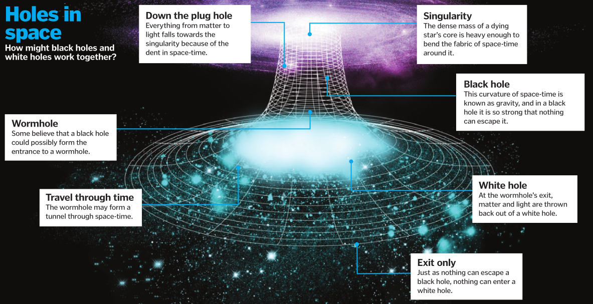

The universe is full of holes – black holes to be precise. These cosmic objects form when a massive star, much bigger than our Sun, collapses in on itself and dies in a spectacular supernova. The remains of this star are concentrated into a very small but dense area, known as a singularity, with a very strong gravitational pull. In fact, it’s so strong that everything around it, even light, gets sucked in and cannot escape, making black holes difficult, but not impossible, to detect. What astronomers haven’t yet been able to detect though, are white holes. Currently just a theoretical mathematical concept, these space objects are essentially the opposite of black holes, expelling matter and light into the universe instead of sucking it in. One theory about the formation of white holes is that they begin as their darker counterparts.
White holes...
